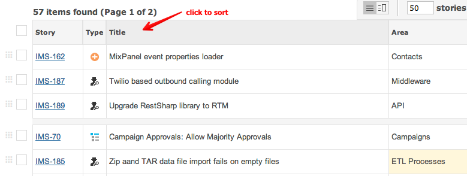
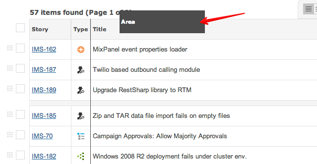

The grid items can be sorted by clicking on column headers:

You can sort on multiple columns by CTRL-CLICK on more than one column.
CTRL-CLICK
You can drag column headers to determine grid order:
